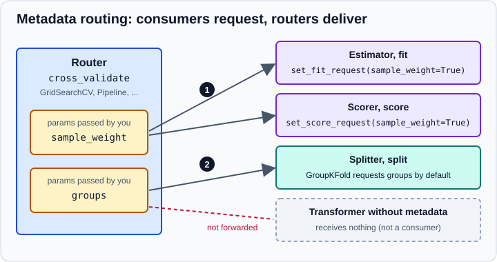

Metadata Routing
|
This content was generated with the assistance of AI and should be verified against the official documentation before being relied on in production. |
Most estimators only need X and y. Some also take extra per-sample information in their methods: sample_weight
in fit or score, groups for a splitter, a validation set for early stopping. When such an estimator sits inside
a Pipeline, a GridSearchCV or a call to cross_validate, there has to be a rule that says which object receives
which argument. Metadata routing is that rule. It lets you pass sample_weight or groups once, to the outermost object,
and have each inner object receive exactly the metadata it asked for. This page targets scikit-learn 1.9 (1.9.1 at the
time of writing) with NumPy 2.5, and was checked in October 2026. Examples target Python 3.13 or 3.14 and were run on Python 3.13. The examples were run with those
versions and the output is the real output. Routing is still labelled experimental in the official documentation: it is
not implemented for every estimator and may change without the usual deprecation cycle. It is off by default and does
not affect code that passes only X and y.
What problem it solves
Before routing, the way to give a weight to the classifier at the end of a pipeline was a special parameter name,
clf__sample_weight, written as a keyword of Pipeline.fit. That worked for fit of one step, but not for the
scorer, not for the splitter that needs groups, and not for nested meta-estimators. The ambiguity is concrete: in
GridSearchCV(pipeline, ...).fit(X, y, sample_weight=w) should the weights be used to fit the model, to compute the
validation score, to select features, or all three? The answer depends on the data and the analysis, and a library
cannot guess it. Routing makes the answer explicit and refuses to run when it was not given.
import sklearn
sklearn.set_config(enable_metadata_routing=True)Vocabulary
| Term | Meaning |
|---|---|
Metadata |
Any argument of a method other than |
Consumer |
An estimator, scorer or splitter that accepts and uses metadata in at least one of its methods, for example
|
Router |
A meta-estimator or function that passes metadata on to other objects: |
Request |
The statement a consumer makes about one piece of metadata for one method. It is set with |
The value of a request can be:
-
True: the method asks for the metadata. If you pass it, it is delivered; if you do not, no error is raised. -
False: the method does not want it. A router will not forward it, even though it was passed. -
None(the default for nearly every object): "not decided". If you pass the metadata and a router finds a consumer that has not decided, it raises an error. The one exception is the splitters of theGroup*Foldfamily, which requestgroupsby default. -
A string: an alias. The consumer still names its parameter
sample_weight, but the router takes the value from the name you chose, so different consumers can receive different arrays.

Passing weights and groups through cross_validate
The next script enables routing and runs the cases described in the official guide on a small random data set. The data are random, so the scores have no meaning; the point is which objects receive which array.
import numpy as np
import sklearn
from sklearn.feature_selection import SelectKBest
from sklearn.linear_model import LogisticRegression
from sklearn.metrics import accuracy_score, make_scorer
from sklearn.model_selection import GroupKFold, cross_validate
from sklearn.pipeline import make_pipeline
sklearn.set_config(enable_metadata_routing=True)
rng = np.random.default_rng(42)
X = rng.random((120, 4))
y = rng.integers(0, 2, size=120)
groups = rng.integers(0, 10, size=120)
weights = rng.random(120)
other_weights = rng.random(120)
cv = GroupKFold(n_splits=3)
# 1. weighted fit and weighted scoring
scorer = make_scorer(accuracy_score).set_score_request(sample_weight=True)
clf = LogisticRegression().set_fit_request(sample_weight=True)
res = cross_validate(clf, X, y, cv=cv, scoring=scorer,
params={"sample_weight": weights, "groups": groups})
print("weighted fit, weighted score:", res["test_score"].round(3))
# 2. unweighted fit, weighted scoring
clf = LogisticRegression().set_fit_request(sample_weight=False)
res = cross_validate(clf, X, y, cv=cv, scoring=scorer,
params={"sample_weight": weights, "groups": groups})
print("unweighted fit, weighted score:", res["test_score"].round(3))
# 3. different weights for fitting and scoring, through aliases
scorer = make_scorer(accuracy_score).set_score_request(sample_weight="scoring_weight")
clf = LogisticRegression().set_fit_request(sample_weight="fitting_weight")
res = cross_validate(clf, X, y, cv=cv, scoring=scorer,
params={"scoring_weight": weights, "fitting_weight": other_weights,
"groups": groups})
print("aliases:", res["test_score"].round(3))
# 4. SelectKBest cannot consume sample_weight, so it simply does not receive it
scorer = make_scorer(accuracy_score).set_score_request(sample_weight=True)
pipe = make_pipeline(SelectKBest(k=2), LogisticRegression().set_fit_request(sample_weight=True))
res = cross_validate(pipe, X, y, cv=cv, scoring=scorer,
params={"sample_weight": weights, "groups": groups})
print("pipeline:", res["test_score"].round(3))
# 5. what happens when a request is missing
try:
cross_validate(LogisticRegression(), X, y, cv=3, params={"sample_weight": weights})
except Exception as exc:
print(type(exc).__name__, "->", str(exc)[:150])
# 6. a misspelled name is not requested by anyone
try:
cross_validate(LogisticRegression().set_fit_request(sample_weight=True), X, y, cv=3,
params={"sample_weights": weights})
except Exception as exc:
print(type(exc).__name__, "->", str(exc))Output:
weighted fit, weighted score: [0.444 0.525 0.457]
unweighted fit, weighted score: [0.512 0.537 0.345]
aliases: [0.52 0.46 0.349]
pipeline: [0.464 0.484 0.483]
UnsetMetadataPassedError -> [sample_weight] are passed but are not explicitly set as requested or not requested for LogisticRegression.fit, which is used within cross_validate. C
TypeError -> cross_validate.fit got unexpected argument(s) {'sample_weights'}, which are not routed to any object.
Reading the cases in order:
-
The splitter requests
groupson its own, the estimator and the scorer are told to takesample_weight, andcross_validatedelivers each array where it is requested. -
Setting
sample_weight=Falseon the estimator gives an unweighted fit while the scorer still weights the evaluation. Both explicit values,TrueandFalse, count as a decision; leavingNonedoes not. -
Aliases map a name of your choice to the consumer’s own parameter name, so two consumers get two different arrays. The mapping is done by the router, not by the consumer.
-
SelectKBesthas nosample_weightinfit, so it is not a consumer and nothing is forwarded to it. -
A missing request raises
UnsetMetadataPassedErrornaming the object and the method. This is the point of the feature: silent default behaviour is replaced by an error that tells you whichset_*_requestcall to make. -
A name that nobody requested (here a typo) is rejected with a
TypeErrorthat lists it.
In the first four cases the argument to cross_validate is named params (added in scikit-learn 1.4); it carries every
piece of metadata, including groups. GridSearchCV.fit and the other searches accept the same metadata as keyword
arguments.
The default scorer is a consumer too
A frequent surprise appears when the object being evaluated is a Pipeline or a meta-estimator, and cross_validate is
left with its default scoring. The default scorer calls the estimator’s score method, and for a Pipeline that
method routes sample_weight to the final step’s score. If that step has not decided whether it wants the weights
for scoring, the fold fails. By default cross_validate does not stop: it sets the score to nan and emits a warning
(error_score=nan), so the problem can go unnoticed in the results.
import warnings
import numpy as np
import sklearn
from sklearn.feature_selection import SelectKBest
from sklearn.linear_model import LogisticRegression
from sklearn.metrics import accuracy_score, make_scorer
from sklearn.model_selection import cross_validate
from sklearn.pipeline import make_pipeline
rng = np.random.default_rng(42)
X = rng.random((120, 4))
y = rng.integers(0, 2, size=120)
weights = rng.random(120)
def pipeline(**score_request):
clf = LogisticRegression().set_fit_request(sample_weight=True)
if score_request:
clf.set_score_request(**score_request)
return make_pipeline(SelectKBest(k=2), clf)
with sklearn.config_context(enable_metadata_routing=True):
params = {"sample_weight": weights}
# the default scorer calls the final estimator's score method, which has no request yet:
# the fold scores silently become nan and only a warning is shown
with warnings.catch_warnings(record=True) as caught:
warnings.simplefilter("always")
res = cross_validate(pipeline(), X, y, cv=3, params=params)
print("default error_score:", res["test_score"], "| warnings:", len(caught))
# error_score="raise" shows the real problem
try:
cross_validate(pipeline(), X, y, cv=3, params=params, error_score="raise")
except Exception as exc:
print(type(exc).__name__, "->", str(exc)[:130])
# fix 1: request the weights for scoring as well
res = cross_validate(pipeline(sample_weight=True), X, y, cv=3, params=params, error_score="raise")
print("score requests weights:", res["test_score"].round(3))
# fix 2: an explicit scorer that does not use the weights
unweighted = make_scorer(accuracy_score).set_score_request(sample_weight=False)
res = cross_validate(pipeline(), X, y, cv=3, params=params, scoring=unweighted, error_score="raise")
print("explicit scorer:", res["test_score"].round(3))
# with routing disabled, params are plain fit parameters of the estimator
res = cross_validate(LogisticRegression(), X, y, cv=3, params={"sample_weight": weights})
print("routing off:", res["test_score"].round(3))
try:
LogisticRegression().set_fit_request(sample_weight=True)
except Exception as exc:
print(type(exc).__name__, "->", exc)Output:
default error_score: [nan nan nan] | warnings: 3 UnsetMetadataPassedError -> [sample_weight] are passed but are not explicitly set as requested or not requested for LogisticRegression.score, which is used wi score requests weights: [0.604 0.48 0.494] explicit scorer: [0.525 0.5 0.5 ] routing off: [0.6 0.5 0.525] RuntimeError -> This method is only available when metadata routing is enabled. You can enable it using sklearn.set_config(enable_metadata_routing=True).
Two lessons follow. When you see nan test scores after enabling routing, rerun with error_score="raise". And decide
explicitly, for every consumer, whether the weights are used to fit, to score or both; the three plausible analyses
(weighted fit and weighted score, unweighted fit and weighted score, weighted fit and unweighted score) give different
numbers. The last two lines show that with routing disabled params are ordinary fit parameters and the
set_*_request methods do not exist.
Inside pipelines, searches and column transformers
Every router asks its children what they request, so the same few calls work at any depth. get_metadata_routing()
prints the request of an object, which is the quickest way to debug a missing delivery.
import numpy as np
import pandas as pd
from sklearn import config_context
from sklearn.base import BaseEstimator, TransformerMixin
from sklearn.compose import ColumnTransformer
from sklearn.linear_model import LogisticRegression, Ridge
from sklearn.metrics import accuracy_score, make_scorer
from sklearn.model_selection import GridSearchCV, GroupKFold
from sklearn.pipeline import Pipeline, make_pipeline
from sklearn.preprocessing import StandardScaler
rng = np.random.default_rng(0)
X = rng.normal(size=(150, 3))
y = (X[:, 0] + rng.normal(size=150) > 0).astype(int)
groups = np.repeat(np.arange(10), 15)
w = rng.random(150)
with config_context(enable_metadata_routing=True):
# inspect what an object requests
print(LogisticRegression().set_fit_request(sample_weight=True).get_metadata_routing())
print(GroupKFold().get_metadata_routing())
# a scaler and a classifier both consume sample_weight inside a Pipeline inside a search
pipe = Pipeline([
("scale", StandardScaler().set_fit_request(sample_weight=True)),
("clf", LogisticRegression().set_fit_request(sample_weight=True)
.set_score_request(sample_weight=False)),
])
scorer = make_scorer(accuracy_score).set_score_request(sample_weight=True)
search = GridSearchCV(pipe, {"clf__C": [0.1, 1.0, 10.0]}, scoring=scorer,
cv=GroupKFold(n_splits=3))
search.fit(X, y, sample_weight=w, groups=groups)
print(search.best_params_, round(search.best_score_, 3))
# ColumnTransformer routes to the transformers it contains
df = pd.DataFrame(X, columns=["a", "b", "c"])
ct = ColumnTransformer(
[("sc", StandardScaler().set_fit_request(sample_weight=True), ["a", "b"])],
remainder="passthrough",
)
ct.fit(df, y, sample_weight=w)
print(ct.named_transformers_["sc"].mean_.round(3))
# a custom estimator: the signature of fit decides what can be requested
class WeightedCenterer(TransformerMixin, BaseEstimator):
def fit(self, X, y=None, sample_weight=None):
self.mean_ = np.average(X, axis=0, weights=sample_weight)
return self
def transform(self, X):
return X - self.mean_
centerer = WeightedCenterer()
print(hasattr(centerer, "set_fit_request"), hasattr(centerer, "set_transform_request"))
centerer.set_fit_request(sample_weight="w")
pipe = make_pipeline(centerer, Ridge())
pipe.fit(X, y, w=w)
print(pipe[0].mean_.round(3))Output:
{'fit': {'sample_weight': True}, 'score': {'sample_weight': None}}
{'split': {'groups': True}}
{'clf__C': 1.0} 0.75
[-0.067 0.105]
True False
[-0.067 0.105 0.034]
-
The first two lines are the request dictionaries: the logistic regression requests
sample_weightforfitand has not decided forscore, andGroupKFoldrequestsgroupsforsplit. -
The search, the pipeline, the scaler, the classifier, the scorer and the splitter each get what they requested, with
sample_weightandgroupspassed once toGridSearchCV.fit. Theclf__Cvalue is chosen only from this toy data. -
ColumnTransformerforwardssample_weightto the scaler it contains; the scaler’smean_is therefore a weighted mean. -
A custom estimator gets
set_fit_requestautomatically becausefithas asample_weightargument, andset_transform_requestdoes not exist becausetransformhas none. The alias"w"lets the caller use the namewinPipeline.fit, and the last step,Ridge, which did not request it, does not receive it.
Transforming metadata inside a pipeline: transform_input
Pipeline has a parameter transform_input (added in scikit-learn 1.6) for a particular situation: a metadata
argument such as a validation set that must go through the same transformations as X before it reaches the step that
uses it. You give it the names of the metadata arguments to transform. Each named argument is transformed by the steps
that precede the consuming step, using the transformers already fitted. It only works with routing enabled, and the
consuming step must request the metadata.
import numpy as np
from sklearn import config_context
from sklearn.base import BaseEstimator, ClassifierMixin
from sklearn.linear_model import LogisticRegression
from sklearn.pipeline import Pipeline
from sklearn.preprocessing import StandardScaler
class ValidatedClassifier(ClassifierMixin, BaseEstimator):
"""Toy classifier that reports the mean of a validation set passed to fit."""
def fit(self, X, y, X_val=None, y_val=None):
self.model_ = LogisticRegression().fit(X, y)
self.classes_ = self.model_.classes_
self.val_mean_ = None if X_val is None else X_val.mean()
return self
def predict(self, X):
return self.model_.predict(X)
rng = np.random.default_rng(1)
X = rng.normal(5, 2, size=(100, 3))
y = (X[:, 0] > 5).astype(int)
X_val = rng.normal(5, 2, size=(20, 3))
y_val = (X_val[:, 0] > 5).astype(int)
with config_context(enable_metadata_routing=True):
estimator = ValidatedClassifier().set_fit_request(X_val=True, y_val=True)
for transform_input in (None, ["X_val"]):
pipe = Pipeline([("scale", StandardScaler()), ("clf", estimator)],
transform_input=transform_input)
pipe.fit(X, y, X_val=X_val, y_val=y_val)
print(transform_input, "-> mean of X_val seen by the classifier:",
round(float(pipe[-1].val_mean_), 3))Output:
None -> mean of X_val seen by the classifier: 4.773 ['X_val'] -> mean of X_val seen by the classifier: -0.003
Without transform_input the classifier receives the raw validation features, on a scale (mean near 5) that differs
from the standardised training data it was fitted on. With transform_input=["X_val"] the validation set is scaled by
the already fitted scaler and the mean is close to zero, as the training features are. The 1.9 release notes also record
a fix so that fit_transform and fit_predict of a pipeline apply transform_input to metadata routed to intermediate
steps, matching fit.
Source: scikit-learn API reference: Pipeline.
Which objects support routing
All simple consumers support routing, which means they can be used inside routers. For meta-estimators the support is
still being completed. The user guide for 1.9 lists these routers and functions as supporting it, among others:
Pipeline, FeatureUnion, ColumnTransformer, TransformedTargetRegressor, GridSearchCV, RandomizedSearchCV,
the halving searches, cross_validate, cross_val_score, cross_val_predict, learning_curve, validation_curve,
permutation_test_score, CalibratedClassifierCV, the stacking and voting ensembles, BaggingClassifier and
BaggingRegressor, RFE, RFECV, SelectFromModel, SequentialFeatureSelector, IterativeImputer, TargetEncoder,
the multioutput and multiclass wrappers, and the *CV linear models. The guide names AdaBoostClassifier and
AdaBoostRegressor as not supporting it yet. The list changes between releases, so check the page for your version
before relying on a combination. The 1.9 release notes record several fixes in this area, among them metadata being
silently dropped when SelectFromModel, RFE, RFECV, SequentialFeatureSelector or IterativeImputer was an
intermediate step of a pipeline, and metadata not reaching the default regressor of TransformedTargetRegressor.
Behaviour with older versions can therefore differ.
Upcoming in scikit-learn 1.10
The development version documents a change that is not released yet and may still change. A new configuration option,
enable_metadata_auto_requests, would let consumers set common requests automatically: estimators derived from
BaseEstimator would auto-request sample_weight on the methods that accept it, scorers made with make_scorer
would do the same when the metric accepts it, and HistGradientBoostingClassifier and HistGradientBoostingRegressor
would auto-request X_val, y_val and sample_weight_val. The option works together with
enable_metadata_routing. If it ships in this form, much of the boilerplate in the examples above would become optional.
Until then, and in every released version, requests must be set explicitly as shown on this page.
Writing estimators that work with routing
An author of a third-party estimator gets the request methods automatically from the signature of fit, score and
similar methods once the class inherits from BaseEstimator. A meta-estimator that forwards metadata must implement
get_metadata_routing and call process_routing in its methods; the developer guide in the references describes both
and the helper classes. A few conventions apply to users of such objects:
-
Request metadata on the leaf estimators, not on the router, unless the router also consumes it.
-
Use aliases when two consumers need different arrays, and give each alias a descriptive name.
-
Do not enable routing globally in a library; use
config_context(enable_metadata_routing=True)or document that the caller has to enable it.
Common pitfalls
-
Forgetting the flag.
set_fit_requestraises aRuntimeErrorunlessenable_metadata_routingis true. -
Leaving a consumer at
None. The error names the object and the method (fit,score); add the matchingset_{method}_requestcall. -
The scorer and the default scoring. As shown above, the estimator’s own
scoremethod is also a consumer. -
Typos in metadata names. They are rejected by the router, which is the safe behaviour.
-
Old step-prefixed names.
pipe.fit(X, y, logisticregression__sample_weight=w)works while routing is disabled, but with routing enabled it raises aTypeError("got unexpected argument(s) … which are not routed to any object"). Switch such calls toset_fit_requestand a plainsample_weight=w. -
Assuming support. An unsupported meta-estimator in the middle of the chain stops the delivery; consult the support list for your version.
Where older books and tutorials are outdated
Metadata routing was introduced in scikit-learn 1.3 and is described by SLEP006. Material from before 1.3 passes weights
with step-prefixed names such as clf__sample_weight, hands groups only to cv.split or to the groups argument
of cross_val_score, and has no way to give the scorer different weights. None of the pre-1.3 material mentions set_fit_request, so do not
expect to find the error messages shown here in older sources. See
What’s New for the change history, and
Cross-Validation & Splitters for the group-aware splitters. The
estimator interface that these requests build on is described in
The Estimator API, and the pipeline building blocks in
Pipelines and
ColumnTransformer & Heterogeneous Data.